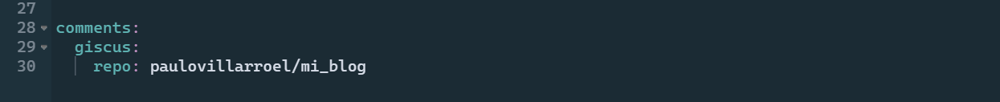

Ya tenemos nuestro blog!
Y ya que al subir este nuevo post, voy a cambiar la configuración, te dejo esta imagen de la versión original del cual parto.

Ahora toca cambia algunas cosas para que el blog sea más funcional y adecuado.
Cambiando el título
Entre esas cosas, quiero cambiar el título del blog. Ahora dice “mi_blog”, que es el nombre del archivo en donde tengo el proyecto completo y que al crear el blog con Quarto, toma este nombre (del archico) por defecto. Pero es feo y quiero cambiarlo por algo más representativo.
Dentro de las carpetas y estructura que se crean por defecto, en la raiz del proyecto hay un archivo que se llama _quarto.yml. Este es un archivo YAML que contiene algunos datos de configuración general del blog.
Si te fijas, ahí está el título del blog, el “mi blog” que deseo cambiar.
Pues bueno, entonces habrá que modificarlo. Voy a poner mi dirección web paulovillarroel.com que es un dominio que compré hace unos días y lo configuré en mi cuenta de Netlify para linkearla a mi blog. Hacer eso es bastante simple. La web de Netlify es bien intuitiva.
Pues bueno…
Para ver los cambios que voy realizando en el blog, sin necesidad de renderizar y desplegar nada (no es buena idea hacer todo es cada vez que se hacen cambios, pues la idea es hacerlo cuando cuando ya se tienen varios cambios finalizados y que comprobamos que funcionan y nos gustan). Para ello, lo que haré es previsualizar la web.
Eso se hace del menú superior de RStudio, en la pestaña de Build está la opción de Preview Website. Esto abrirá una pestaña del navegador con el preview de lo que estamos haciendo.
Ok!! Vamos avanzando!! üéâ
Ya tenemos cambiado el nombre de la web, arriba a la izquierda. Y aparace una nueva entrada a blog que es este mismo artículo que estoy escribiendo.
Pero sigue apareciendo “mi_blog” como una especia de título.
Para modificar esa sección, es necesario cambiar algunas cosas de la página que estamos visualizando. En la carpeta raíz del proyecto, tenemos el archivo index.qmd. Si lo abrimos, nos encontramos con lo siguiente:
Vemos que tiene como título “mi_blog”. Maravilloso!!!
Ahora procedemos a cambiarlo. En mi caso le he puesto simplemente Blog.
Hay varias opciones de configuración aquí, pero por ahora las dejaremos igual. Ya las retomaré más adelante.
Fíjate que si ya tienes la pestaña del navegador abierta (la que se abrió al hacer clic en Preview) y la actualizas, se verán reflejados los cambios (debes guardarlos antes eso si). Recuerda que este preview está solo en tu computador y no en la versión publicada en la web. Por eso la dirección sale localhost, que es tu pc.
Cambiando links
Si eres curioso/a, te habrás dado cuenta que los links de los íconos que salen arriba a la derecha te llevan a las web oficiales de GitHub y Twitter. Bueno, eso es algo que debemos cambiar, para poner los link a mis redes sociales respectivas.
En el archivo _quarto.yml que ya vimos antes, están los link para modificarlos. Pongo mis links correctos y aprovecho de agregar mi perfil de LinkedIn.
Finalmente, me queda así…
Cambiando el tema
El tema por defecto del blog no está mal, pero me gustaría probar otro.
Quarto usa Bootstrap 5 y Boostwatch para los temas. Tiene 25 temas ya inlcuídos por defecto, los cuales los puedes ver y revisar en la web de Quarto.
En mi caso usaré el tema darkly, ya que me gustan los temas oscuros.
Para cambiar el tema tan solo debes cambiar el nombre que aparece en theme en el YAML. Sin embargo, podemos hacer algo interesante acá y es agregar la opción de tener 2 temas, uno claro y otro oscuro para que sea el usuario quien pueda elegir cual le acomode más. Para eso, en la sección themes debemos hacer lo siguiente:
La verdad, es que podríamos cambiar muchas más cosas del tema, incluso crear un tema propio. Para ello, tendríamos que tocar el CSS, pero este es un tutorial para principiantes, así que no me voy a meter en esos temas por ahora. Pero creéme, conocer de HTML y CSS es algo muy útil. Te lo dejo ahí.
Nota que puse la versión dark arriba de la light, pues quiero que esa sea la por defecto al entrar a la web.
Cambiando el layout
Hasta ahora, el blog se ve de esta forma:
Pero esa configuración de cómo se ven los artículo no me termina de convencer.
Si revisamos la web de Quarto, tenemos varias opciones para el layout:
default
grid
table
Para modificar esta configuración, debemos hacerlo del archivo index.qmd de la raiz del proyecto. En la sección listing/type.
De las 3 opciones, me gusta más la opción de grid. Con ello, el blog queda algo así…
Agregando comentarios
Una de las cosas interesantes de un blog es la interacción con los visitantes. Y una de las opciones interesantes que te ofrece Quarto es agregar la posibilidad de que las personas puedan escribir comentarios en los artículos.
En la web de Quarto puedes leer más detalles de esta implementación.
En este caso, yo usaré Giscus, que se basa en los comentarios de GitHub. Aprovecharemos la instancia que ya tenemos nustro blog en Github para usar esta funcionalidad.
Ok, vamos con esto…
- Tenemos que ir a la web de Giscus y darle al botón
install.
- Debemos elegir el repositorio de GitHub al cual haremos referencia, en este caso, el que creamos en el artículo anterior.
- Le damos a Install.
- Es posible que GitHub te pida algunos permisos o verificaciones.
- Debes asegurarte que tienes las discusiones habilitadas en tu repositorio. Si no has cambiado nada, por defecto la debes tener desactivadas. Para activarlas, tienes que ir a tu repositorio del blog e ir a
Settings.
- En la sección de configuración (settings) baja un poco en la página. Encontrarás una sección llamada Features. Marca la opción de
Discussions.
- Anda al archivo
_quarto.ymly agrega este código:
comments:
giscus:
repo: YOURGITHUBACCOUNT/YOURREPOLógicamente, en donde dice repo debes poner la dirección web de tu repositorio de GitHub en donde tienes el proyecto.
En mi caso, queda así:

Por defecto, al agregar esta llínea de código se pondrá en cada página de la web la opción de discusiones. En mi caso, solo quiero ésto para los artículos, pero no para la parte en donde muestro todos los artículos y otras partes como el about (que no lo hemos tocado hasta ahora, por cierto).
Para evitar ésto, debemos incluir en el YAML de los
.qmdrespectivos el siguiente código:
comments: falseAlgunos toques finales
Para darle algunos toques finales a la personalización del blog, te dejo como dejé mi archivo _quarto.yml
project:
type: website
website:
title: "PauloVillarroel.com"
site-url: "https://www.paulovillarroel.com/"
google-analytics: "G-RNWVZS7ZL8"
navbar:
right:
- about.qmd
- icon: github
href: https://github.com/paulovillarroel
- icon: twitter
href: https://twitter.com/Chazkon
- icon: linkedin
href: https://www.linkedin.com/in/paulovillarroeltapia/
format:
html:
smooth-scroll: true
theme:
dark: darkly
light: flatly
css: styles.css
link-external-newwindow: true
editor: visual
comments:
giscus:
repo: paulovillarroel/mi_blogOk
Ya estamos terminando este artículo. Espero que te haya sido útil.
Aún faltan cosas por configurar y personalizar, pero hemos avanzado bastante por ahora.
Nos vemos!! üöÄ